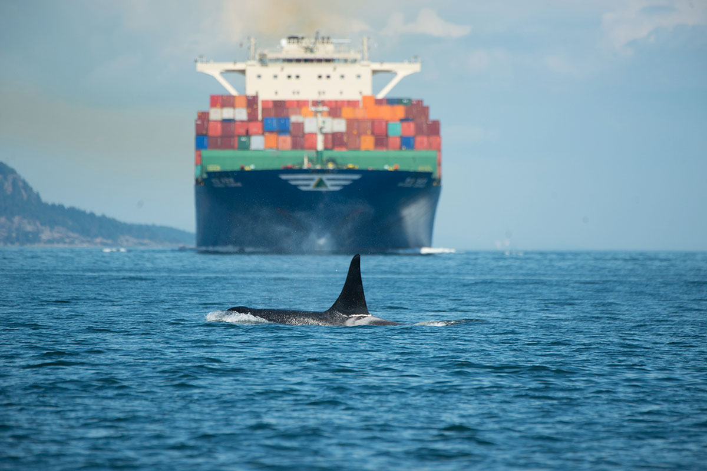
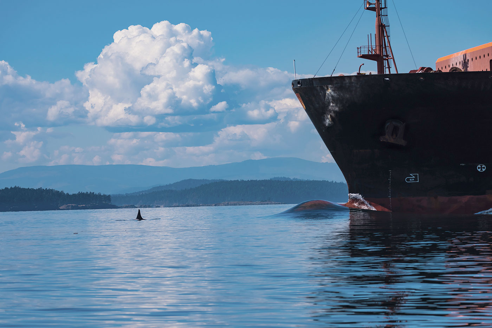

<%= t.renderMarkdown(archieml.story.chinook) %>
Jeff Bradley, Mammology Collections manager at the Burke Musuem of Natural History and Culture, holds a jawbone from Namu, the world's first captive performing killer whale, brought by Ted Griffin to his aquarium on Elliott Bay. The big sockets in the jawbone held Namu's teeth. (Steve Ringman / The Seattle Times)
<%= t.renderMarkdown(archieml.story.surfacehunt) %>
<%= t.include("_prerollVideo.html", { file: "4_dronesurfacehunt_loop.mp4", id: "6027357692001", runtime: "4:43" }) %>
In this rare video footage, two J pod whales chase a chinook salmon, hunting at the surface of the water on the west side of San Juan Island in August 2018. The older whale, J46, after several tries catches the fish and shares it with the youngest member of her family, J53. Credit: Center for Whale Research and Michael Weiss and Darren Croft, University of Exeter. Taken under NMFS permit 21238
<%= t.renderMarkdown(archieml.story.surfacehuntend) %>

The teeth of southern resident killer whales are up to 4 inches long, hard and dense as marble, and needle-sharp for shredding salmon. These teeth belonged to Namu the killer whale and are kept at the Burke Museum of Natural History and Culture. (Steve Ringman / The Seattle Times)
<%= t.renderMarkdown(archieml.story.ancienthunters) %>
<%= t.renderMarkdown(archieml.story.culture) %>

Orca whale L87 is dwarfed by the hull of a ship. Orcas raise their voices to be heard and forage less in the presence of vessels. Noise and disturbance is one of the three main threats identified by scientists to the survival of the endangered southern residents that frequent Puget Sound. (Credit: Alan Niles/Maya's Legacy Whale Watching)
<%= t.renderMarkdown(archieml.story.maritimeculture) %>
Scientist Rob Williams, left, of the non-profit Oceans Initiative, and Joe Gaydos, senior scientist of the SeaDoc Society, listen to the racket of industrial shipping underwater using a hydrophone dropped into Haro Strait. (Steve Ringman / The Seattle Times)
<%= t.renderMarkdown(archieml.story.smallcity) %>

LEARN MORE
Explore a glossary of orca terms and our orca reading list.
<%= t.renderMarkdown(archieml.story.veirs) %>
Val Veirs drops an underwater microphone off shore of his home on the West Side of San Juan Island. Sounds stream in from underwater, from the groans of ships to the rumble of ferries. Credit: Ramon Dompor.
<%= t.renderMarkdown(archieml.story.hydrophones) %>

<%= t.renderMarkdown(archieml.story.frequencies) %>

A southern resident orca whale is dwarfed by the hull of a ship in the Haro Strait. The west side of San Juan Island is a primary foraging ground for the southern residents but also a shipping route for container ships, oil tankers, and other commercial traffic to and from the Port of Vancouver, the busiest by tonnage on the West Coast. Ken Rea/Special to the Seattle Times.

Container ship Los Angeles

Bulk carrier Alcor on its last voyage
Car carrier Ivory Arrow
<%= t.renderMarkdown(archieml.story.calls) %>

Whale watchers from B.C. observe transient orcas. In an industry that draws about 500,000 people a year, southern resident orcas now comprise only 10- to 15 percent of sightings; most are humpbacks, gray whales and transients. (Steve Ringman / The Seattle Times)
<%= t.renderMarkdown(archieml.story.whalewatching) %>
Val Veirs drops an underwater microphone off shore of his home on the West Side of San Juan Island. Sounds stream in from underwater, from the groans of ships to the rumble of ferries. Credit: Ramon Dompor.
<%= t.renderMarkdown(archieml.story.balcomb) %>
Speed is a top factor in the amount of noise orcas receive from vessel traffic. This whale watching boat is headed back to port after an evening cruise last July along the west side of San Juan Island. (Steve Ringman / The Seattle Times)
<%= t.renderMarkdown(archieml.story.fishermen) %>
<%= t.renderMarkdown(archieml.story.tagline) %>
- Reporter: Lynda V. Mapes
- Photographer: Steve Ringman
- Project editor: Benjamin Woodard
- Photo editor: Fred Nelson
- Videographer: Ramon Dompor
- Video editor: Lauren Frohne
- Graphic artist: Emily M. Eng
- Art director and developer: Frank Mina
- Page designer: Rita Wong
- Engagement:
Jeff Albertson, Gina Cole - Copy editor: Laura Gordon